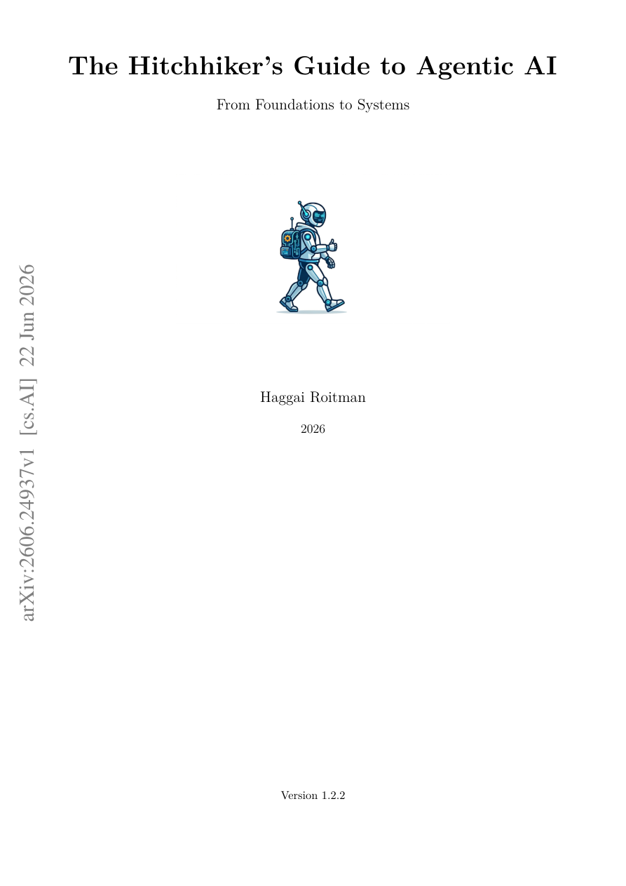

#1
★ 7/10
The Hitchhiker's Guide to Agentic AI: From Foundations to Systems
智能体AI搭便车指南：从基础到系统

图 Figure · Page 1 of paper
🎯 首部覆盖自主AI系统全栈的实践者参考书
A comprehensive practitioner's textbook covering every layer of autonomous agentic AI systems.
🗣️ 一句话比喻 · Plain-English Analogy就像《搭便车客银河系漫游指南》是科幻旅行者的终极手册，这本书就是AI工程师穿越"智能体星系"的完整导航地图——告诉你每颗星球（每个技术层）是什么、怎么到达、以及如何把它们连成一段完整的星际旅程。Think of it like the ultimate travel guidebook for a continent you've never visited — except the continent is "Agentic AI." Instead of just describing one city (like "how to train a model"), it maps every road, border crossing, and landmark from the very first step to arriving at a fully working autonomous AI system. Don't panic — just follow the guide!
| 维度 | 中文 | English |
|---|---|---|
| ❓ 待解决 的问题 |
构建真正能"自主行动"的AI系统非常复杂，就像同时学会开车、读地图、加油和处理突发状况。现有资料要么只讲底层模型，要么只讲应用，缺乏一本从头到尾打通所有环节的完整指南。开发者往往只懂某一层，导致整个系统出了问题却不知从哪下手。 | Building autonomous AI systems — ones that can plan, remember, use tools, and talk to other AI agents — is incredibly complex. Existing resources only cover one piece of the puzzle: some books explain the underlying models, others explain how to deploy apps, but nobody explains the full picture end-to-end. Developers who only understand one layer struggle when things break in another. |
| 💡 解决 的亮点 |
• 全栈覆盖：从GPU训练、模型压缩到多智能体协作协议，一本书打通所有层次 • 以"智能体"为核心组织全书，而非传统的以"模型"为中心，视角更贴近实际产品开发 • 系统梳理了MCP、A2A等最新智能体通信协议，以及集中式/去中心化/层级式多智能体架构分类 • 将理论与代码示例、生产部署建议并排呈现，兼顾学术严谨性与工程实用性 | • Full-stack coverage: from GPU infrastructure and model training all the way to multi-agent coordination and production deployment in one unified reference • Agent-first organization: unlike model-centric textbooks, this frames everything around building autonomous systems that act in the real world • Covers cutting-edge protocols (MCP, A2A) and a taxonomy of multi-agent architectures (centralized, decentralized, hierarchical) rarely synthesized in one place • Pairs rigorous theory with code examples and deployment guidance, bridging academia and engineering practice |
| 🧪 实验 内容 |
本书为综述性教材，并非实验性研究论文，因此没有标准意义上的数据集、基线模型或量化评测实验。书中通过引用一级文献（如PPO、DPO、LoRA、RAG等原始论文）来支撑各章节的技术内容，并提供代码示例作为实践验证。 | As a comprehensive practitioner's textbook rather than an empirical research paper, this work does not conduct original experiments. Instead, it synthesizes and cites primary literature (original papers on PPO, DPO, LoRA, RAG, MCP, A2A, etc.) to ground every technical claim, and provides code examples throughout as hands-on validation of concepts. |
| 📊 实验 结果 |
本书为综合性参考教材，不包含原创实验数据或benchmark数字。其贡献在于将分散在数百篇论文和工程博客中的知识，系统整合为覆盖智能体AI全栈的单一权威参考，涵盖从transformer基础到生产部署的完整知识图谱。 | As a textbook, there are no benchmark numbers or experimental results to report. The value is in scope and synthesis: it consolidates knowledge scattered across hundreds of research papers and engineering blogs into one structured, full-stack reference spanning transformer fundamentals through production-grade agentic deployment. |
| 🏁 结论 | 本书最终证明，构建高质量的自主AI系统需要开发者同时理解每一个技术层次，而不仅仅是某一个专精点。它为该领域提供了第一本从模型基础到多智能体生产部署的系统性全栈参考书。 | This book establishes that building great agentic AI systems requires deep understanding of the entire stack — from model training to multi-agent coordination — not just one specialization. It provides the field's most comprehensive single-volume practitioner reference for autonomous AI development. |
| 🔗 论文 链接 |
arXiv: 2606.24937v1 · 📥 PDF | |
⚙️ Method · 方法详解
这本书把构建AI智能体系统比作建造一栋大楼：地基是大语言模型（transformer、GPU、训练技术），二楼是对齐与推理层（让AI学会按人类意图行动，包括RLHF、思维链等），三楼才是真正的"智能体"功能（记忆、工具使用、多智能体协作）。作者用"每一层都要懂"的核心论点，把这些内容组织成一个从底到顶的完整学习路径，每章都配有理论、代码和文献引用。
The book is organized like building a skyscraper from the ground up. The foundation is the raw AI model — how transformers work, how to train and compress them. The middle floors cover "alignment," teaching the AI to behave helpfully and reason step-by-step. The top floors are the agentic layer: giving AI memory, tools, and the ability to collaborate with other AI agents. Each chapter pairs the "why it works" theory with real code and pointers to original research papers, so readers build understanding at every level before moving to the next.
🌟 Why It Matters · 为什么重要
随着AI从"回答问题"进化为"自主完成任务"，工程师们迫切需要一张完整的地图来驾驭这个复杂的生态。这本书填补了学术研究与工程落地之间的鸿沟，有望成为下一代AI产品开发者的必备参考。
AI is rapidly evolving from chatbots that answer questions to autonomous agents that execute complex tasks — and the world needs engineers who understand the whole picture. This book serves as the missing manual for that transition, helping developers build safer, more capable agentic systems that power the next generation of AI products.